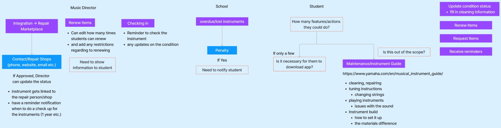
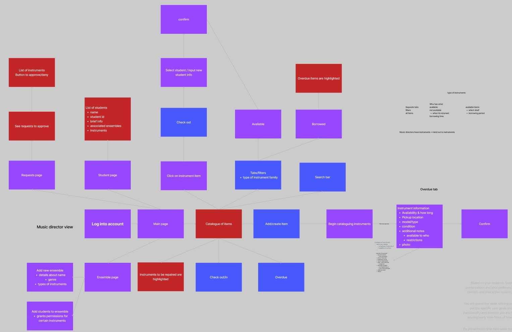
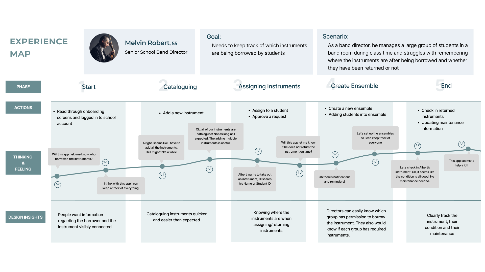
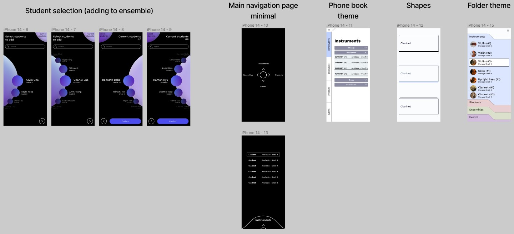
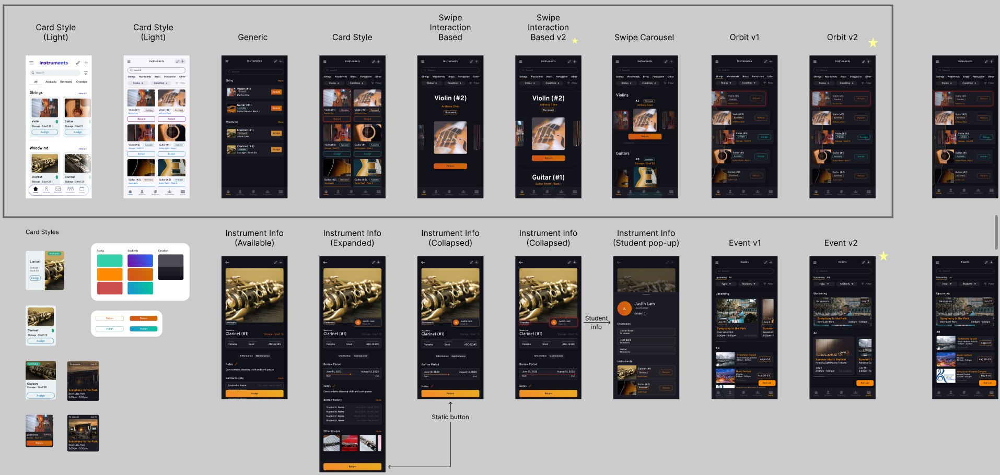

Project Planning
We first started with secondary research from online sources. Some topics that we researched were surrounding instrument care, library archiving, existing school equipment tracking tools, and instrument rental and maintenance.
We also conducted some interviews with some people we knew who were involved with music and music directing. I conducted 3 interviews with my Air Cadet friends who participated in the squadron band and their school bands. Some of my interviewees were ensemble directors and others were section leads. During the interviews, I used some pre-determined questions to guide the conversation and then asked more insightful questions in response to the interviewees' answers.
After determining the topic domain, issues, and similar existing apps, we began thinking of what screens and processes the user would be going through while during the process of tracking instruments. This includes cataloguing the instruments, assigning them and returning them from students, and the students and ensembles currently in the school.
Initial Design
After determining the topic domain, issues, and similar existing apps, we began thinking of what screens and processes the user would be going through while during the process of tracking instruments. This includes cataloguing the instruments, assigning them and returning them from students, and the students and ensembles currently in the school.
To further contextualize the issue, we also created a user experience map to analyse the thoughts and opportunities throughout the different phases of the instrument tracking process.
During our first design proposal, we were given feedback that the app was somewhat boring and were asked to find a way to make the cataloguing process quicker, instead of feeling like filling out a form. To some extent, some of the information needed to keep track of the instrument could not be avoided, but we thought of using solutions like using photos and computer vision to help expedite the process.

Design Iterations
Based on feedback we recieved, I also designed some more experimental designs that broke away from our initial design and were meant to explore possible interactions in a more unconstrained way.
I also redesigned the instrument info pages to show the most relevant information at a glance without requiring the user to scroll. Additionally, we decided to add in some events to the app where the music directors could assign a groups or specific instruments to an event. I ended up making 3 variations of the event page.
Refining
Throughout this process, we conducted user testing with friends to see how well the app worked. Some issues our users encountered involved the onboarding process, cataloguing efficiency, returning, assigning, and request process, and the events page. We then rethought and redesigned these processes to alleviate those issues.
When users first open the app, it was blank because there are no instruments in the catalogue. As a result, our users were left feeling lost and confused right from the start. To solve this, we created a brief onboarding process with popups that indicate what the different buttons do and what process the user should be going through to catalogue and assign or return instruments.
To fix the other issues, we focused how to better guide the user through the processes (cataloguing, returning, assigning, requesting...). Some of these were resolved through better copy and blank state instructions.
Results
This project was quite work intensive, requiring us to ideate the app concept, features, screens, all while designing the interface and prototyping the interactions. I found that I enjoyed the process of designing the visual interfaces the most fun, especially while creating some experimental iterations. It was interesting getting feedback from the teaching team and thinking of solutions to make the experience more streamlined and intuitive for the user. Although the final prototype did not turn out as polished as I had initially hoped, I am still quite satisfied with the result of our project.